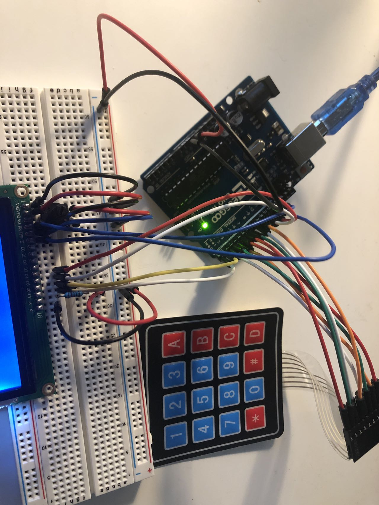

High(er) voltage and transistors!
The circuit has an N-MOSFET transistor, an ultrasonic sensor, and an LED strip.
The ultrasonic sensor detect the distance to an object, which is the brightness of the LED strip based on.
The LED strip is connected to a 12V external power supply, and is controlled by the transistor.

From the LED strip user manual, I learned that it is rated at 12V and 1.5A.
The external power supply can output 12V and 2A, which would be enough to light the LED.

A GIF showing the operation of the circuit!
The code that makes this work:
const int trigPin = 9; // initialize the trigger pin
const int echoPin = 10; // initialize the echo pin
const int ledPin = 6; // initialize the LED strip pin
long duration; // initialize the time it takes for the ultrasonic pulse to travel
int distance; // initialize the distance between the sensor and the object
int brightness; // initialize the brightness of the LED strip
void setup() {
pinMode(trigPin, OUTPUT); // set trigger as output
pinMode(echoPin, INPUT); // set echo as input
pinMode(ledPin, OUTPUT); // set LED as output
digitalWrite(ledPin, LOW); // turn the LED off at the beginning
Serial.begin(9600); // initialize serial monitor
}
void loop() {
// send a 10us pulse with the ultrasonic sensor, and turn it off afterwards
digitalWrite(trigPin, LOW);
delayMicroseconds(2);
digitalWrite(trigPin, HIGH);
delayMicroseconds(10);
digitalWrite(trigPin, LOW);
duration = pulseIn(echoPin, HIGH); // measure the duration of the pulse
distance = duration * 0.034 / 2; // calculate the distance based on the duration
Serial.println(distance); // keep track of the distance in monitor
if (distance < 5) { // if the distance is less than 5 cm
brightness = 255; // set the brightness to full brightness
} else {
brightness = 0; // set the brightness to zero brightness
}
analogWrite(ledPin, brightness); // set the LED brightness
delay(200); // delay for 0.2 seconds
}